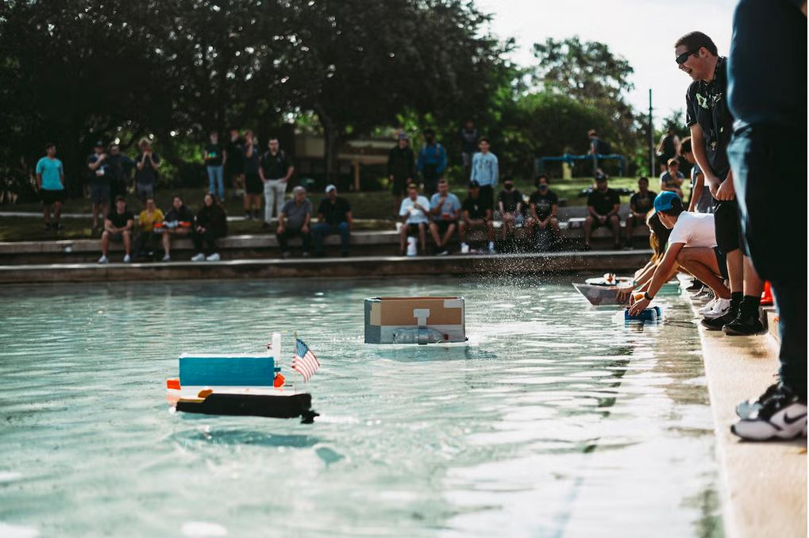

Group Project Leader
As team leader, I guided a semester‑long engineering project to design and build a functional boat for the GNOR competition. I coordinated tasks, managed timelines, and applied iterative design principles to ensure our prototype was both functional and innovative. Using Onshape CAD, I designed components and assemblies that contributed to a successful final build.
